Chapter 9 Support Vector Machines
The library we’ll use for SVMs is e1071 which is a weird name for a package. The reason behind the name is that the package grew out of functions used by a department of statistics at the Vienna University of Technology and their Group ID and the univerisity was e1071.
library(tidyverse) # my usual tools, ggplot2, dplyr
library(e1071) # for svm() function
library(pROC)9.1 Maximal Marginal Classifier
Consider the following data were we have two different classes and we wish to use the covariates \(x\) and \(x\) to distiguish between the two classes. Let the group response values be coded as \[y_i = \begin{cases} +1 \;\;\;\;\;\;\textrm{ if an element of Group 1} \\ -1 \;\;\; \textrm{ if an element of Group 2} \end{cases}\]
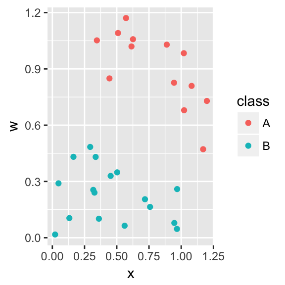
For this data, there is a separating hyperplane (a line) that separates the two groups. We will parameterize the hyperplane as \[\underbrace{\beta_0 + \beta_1 x + \beta_2 w}_{f(x, w)} = 0\] which can be generalized to the p-dimensional case as \[\underbrace{\beta_0 + \sum_{j=1}^p \beta_j x_j}_{f(x_1, x_2, \dots, x_p)} = 0\] or in keeping with the usual matrix notation as \[\mathbf{X\beta}=\mathbf{0}\]
Notice that this definition of the line is overparameterized because it has three parameters instead of the usual 2. Notice that if we write it in the usual slope/intercept form, we have
\[w = \frac{-\beta_0}{\beta_2} + \frac{-\beta_1}{\beta_2} x\]
and that multiplying the \(\mathbf{\beta}\) vector by any constant, would still result in the same separating line.
Notationally, let \(\mathbf{X_i}\) be the \(i^{th}\) row of the design matrix \(\mathbf{X}\). We now wish to find values for \(\mathbf{\beta}=\beta_0, \beta_1\), and \(\beta_2\) such that \[\begin{aligned} \mathbf{X}_i\mathbf{\beta} >0 \;\;\;& \textrm{ if } y_i = 1 \\ \mathbf{X}_i\mathbf{\beta} <0 \;\;\;& \textrm{ if } y_i = -1 \end{aligned}\]
Utilizing our defination of \(y_i\) being either +1 or -1, we can write succinctly write this as \[y_i \; \mathbf{X}_i\mathbf{\beta} > 0\]
However there are many possible separating hyperplanes and we wish to find the one that maximizes the margin, \(M\), which we define as the perpendicular distance from the separating hyperplane to the nearest observations in each class.
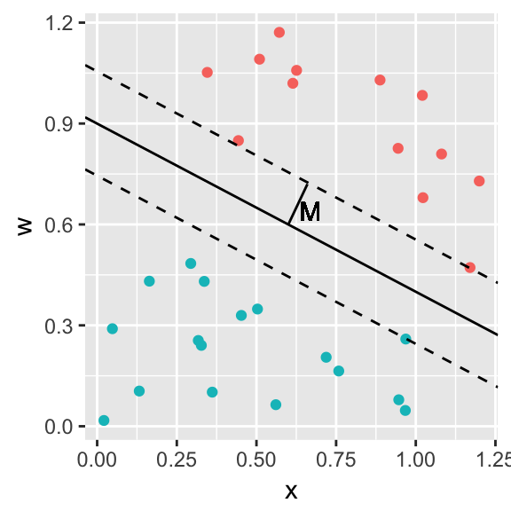
The process of finding this separating hyperplane is to maximize \(M\) subject to \[y_i \; \mathbf{X}_i \mathbf{\beta} \ge M\;\;\; \textrm{ for all }i\] \[\sum_{j=1}^p {\beta_j} = 1\]
where the last constraint on the sum of the \(\beta_j\) terms is to force identifiability because if we just multiplied them all by 2, we would get the same line.
9.2 Support Vector Classifier
We now allow for the case where there isn’t a perfect separating hyperplane. The overall process doesn’t change, but we now allow for some observations to be in the margin, or even on the wrong side of the separating hyperplane. However we want to prevent too many of points to do that. Our maximization will be to again maximize \(M\) subject to
\[y_i \; \mathbf{X}_i \mathbf{\beta} \ge M(1-\epsilon_i)\;\;\; \textrm{ for all }i\] \[\sum_{j=1}^p {\beta_j} = 1\]
where \(\epsilon_i>0\) and \(\sum_{i=1}^n \epsilon_i<C\), for some tuning constant C. Here we think of the \(\epsilon_i\) terms as zero if the observation is on the correct side and outside of the margin, between 0 and 1 if the observation is on the correct side but inside the margin, and greater than 1 if the observation is on the wrong side of the hyperplane.
The observations for which \(\epsilon_i>0\) are the observations that actually determine the shape (slope in this simple case) of the separating hyperplane and are referred to as the support vectors of the classifier.
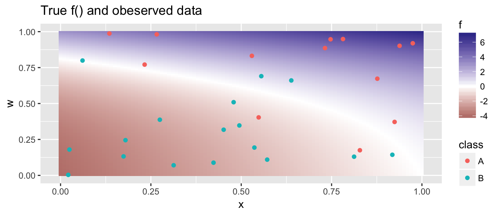
Using the observed data, how well can we estimate the true shape of \(f()\)? The R code to solve this problem relies on the package e1071. In this package, they use a penalty parameter cost that is inversely proportional to \(C\). So the smaller the cost, the more observerations should end up in the margin.
# cost 10, some penalty for misclassification, but not crushing.
model <- svm( class ~ x + w, # Which covarites?
data=data, # where is the data I'm using
kernel='linear', # What kernel are we using
cost=10, # How large a penalty for violations
scale=TRUE) # Scale the covariates first; Default is TRUE
plot(model, # the output from the svm call
data=data, # the data where the observed data are
x ~ w, # a formula for what covariate goes on which axis
grid = 200) # what resolution for the prediction grid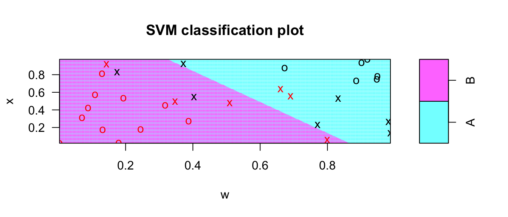
# Create a similar graph using predict() and ggplot2
m <- 101
grid <- expand.grid(x=seq(0,1,length=m),
w=seq(0,1,length=m) ) %>%
mutate( yhat = predict(model, newdata=grid) )
Pred <- ggplot(grid, aes(x=x, y=w)) +
geom_tile(aes(fill=yhat), alpha=.2) +
geom_point(data=data, aes(color=class))
Pred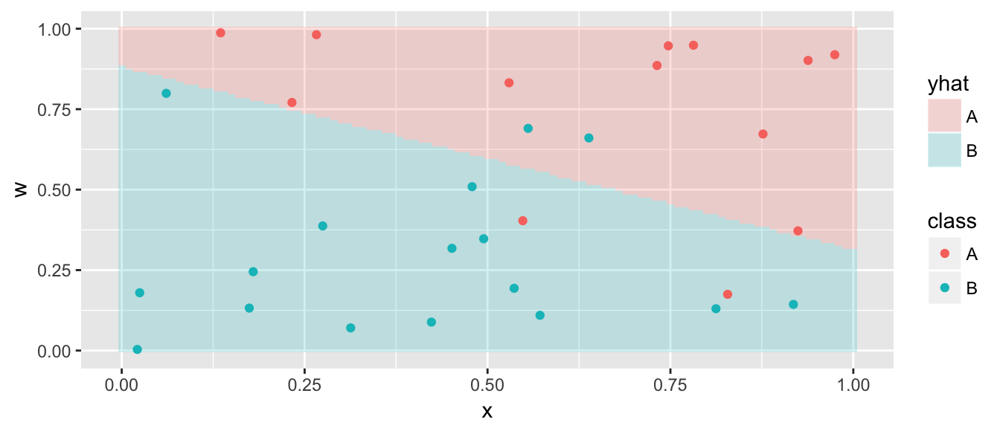
Now we allow ourselves to use an expanded feature space (covariates) and we’ll allow polynomials of degree d for each of the continuous covariates. That is to say that we will add \(x^2\), \(x^3\), \(w^2\), and \(w^3\) to the covariate list. The default is to allow d=3 which is a nice mix of flexibility without allowing excessive wiggliness.
model <- svm( class ~ x + w, data=data,
kernel='polynomial', degree=3, cost=.1)
grid <- grid %>% mutate( yhat = predict(model, newdata=grid) )
ggplot(grid, aes(x=x, y=w)) +
geom_tile(aes(fill=yhat), alpha=.2) +
geom_point(data=data, aes(color=class))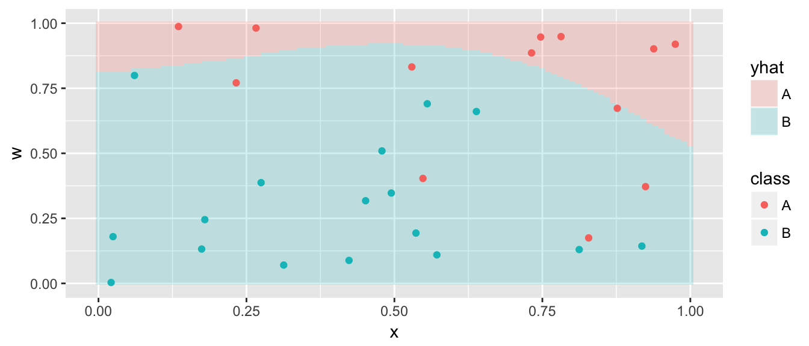
Perhaps the cost is too low and we don’t penalize being on the wrong side of the hyperplane enough. So increasing the cost should force the result to conform to the data more.
model <- svm( class ~ x + w, data=data,
kernel='polynomial', degree=3, cost=50)
grid <- grid %>% mutate( yhat = predict(model, newdata=grid) )
ggplot(grid, aes(x=x, y=w)) +
geom_tile(aes(fill=yhat), alpha=.2) +
geom_point(data=data, aes(color=class))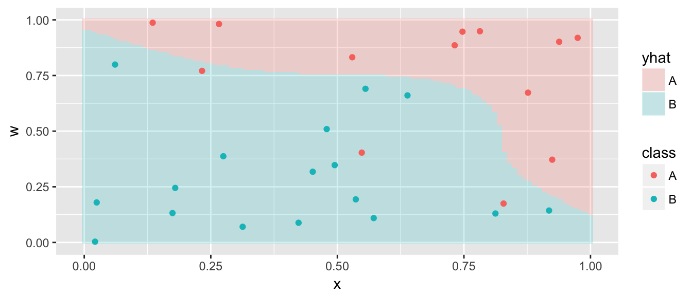
This is actually pretty close to the true underlying function.
A more complicated example, where the polynomial feature space is insufficient is given below.
## [1] 185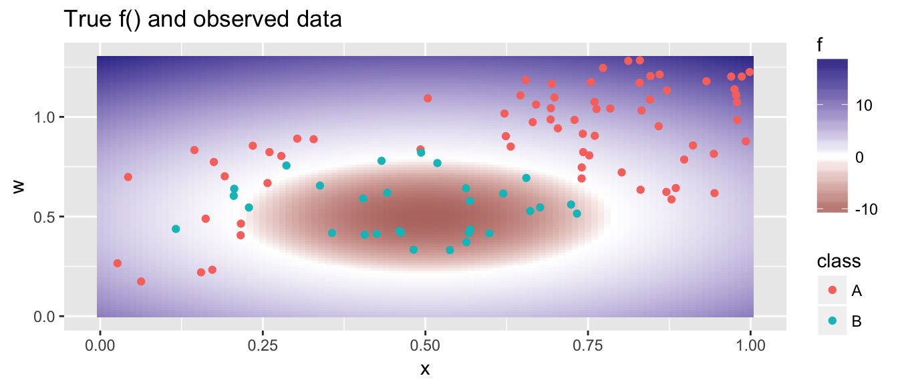
model <- svm( class ~ x + w, data=data,
kernel='polynomial', degree=2, cost=100)
grid <- grid %>% mutate( yhat = predict(model, newdata=grid) )
ggplot(grid, aes(x=x, y=w)) +
geom_tile(aes(fill=yhat), alpha=.2) +
geom_point(data=data, aes(color=class))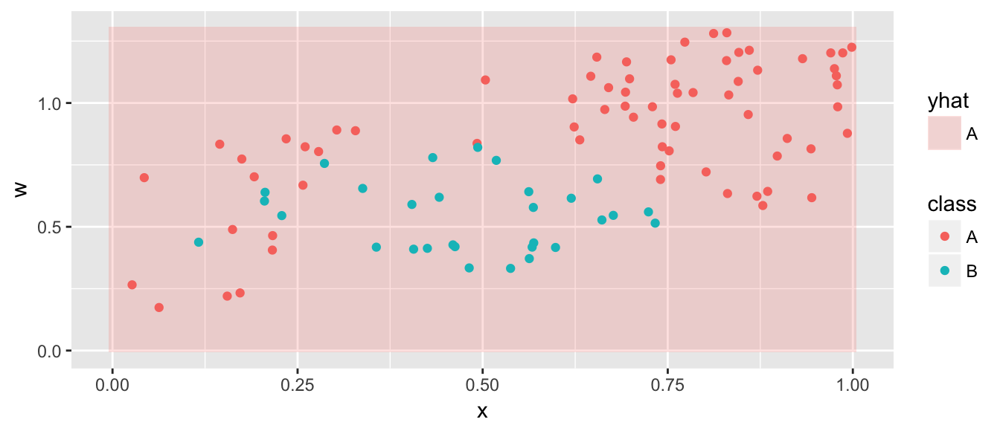
The degree 2 polynomial feature space is not flexible enought to capture this relationship, and we need a more flexible feature space.
9.3 Support Vector Machines
One interesting fact about the statistical linear model is that the there is quite deep links with linear algebra. For vectors \(\mathbf{x}\) and \(\mathbf{w}\), each of length \(n\), the dot product is defined as \[\begin{aligned} \mathbf{x} \cdot \mathbf{w} &= \sum_{i=1}^n x_i w_i \\ &= \vert\vert \mathbf{x} \vert\vert\, \vert\vert \mathbf{w} \vert\vert \cos \theta \end{aligned}\] where \(\theta\) is the angle between the two vectors. If \(\mathbf{x}\) and \(\mathbf{w}\) are perpendicular, then \(\cos \theta = 0\). In linear algebra, this concept can be generalized to something called an inner product which is denoted \(\langle \mathbf{x}, \mathbf{w} \rangle\) and the dot product is the usual inner product. In general, we should think of the inner product as a measure of similarity between two vectors.
It turns out that for any vector \(\mathbf{x}^*\) we can write \(f(\mathbf{x}^*)\) in two different ways: \[\begin{aligned} f(\mathbf{x}^*) &= \beta_0 + \sum_{j=1}^p x_j^* \beta_j \\ &= \vdots \\ &= \beta_0 + \sum_{i=1}^n \alpha_i \,\langle \mathbf{X}_i, \mathbf{x}^*\rangle \end{aligned}\]
where both the \(\alpha_i\) and \(\beta_j\) terms are functions of the \(n\choose{2}\) pairwise inner products \(\langle \mathbf{X}_i, \mathbf{X}_{i'} \rangle\) among the observed data observations.
We can generalize this by considering a kernel function which we will think about a similarity function between two vectors. Letting \(\mathbf{a}\) and \(\mathbf{b}\) be vectors of length \(p\), we could use many different similarity functions:
\[K(\mathbf{a}, \mathbf{b} ) = \sum_{j=1}^p a_j b_j\]
This is the usual inner product and corresponds the fitting the separating hyperplane in a linear fashion.
\(K(\mathbf{a}, \mathbf{b} ) = \left( 1+\sum_{j=1}^p a_j b_j \right)^d\)
This is equivalent to fitting polynomials of degree \(d\) in each covariate. We refer to this kernel function as the polynomial kernel of degree \(d\).
\(K(\mathbf{a}, \mathbf{b} ) = \exp\left( -\gamma \sum_{i=1}^p (a_j - b_j)^2 \right)\)
This kernel is known as the radial kernel and is an extremely popular choice. Notice that \(\sum (a_j-b_j)^2\) is the eucidean distance between the multivariate points \(\mathbf{a}\) and \(\mathbf{b}\) and then we exponentiate that distance (similar to the normal density function). For the radial kernel, there is a second tuning parameter \(\gamma\).
model <- svm( class ~ x + w, data=data,
kernel='radial', cost=500)
grid <- grid %>% mutate( yhat = predict(model, newdata=grid) )
ggplot(grid, aes(x=x, y=w)) +
geom_tile(aes(fill=yhat), alpha=.2) +
geom_point(data=data, aes(color=class))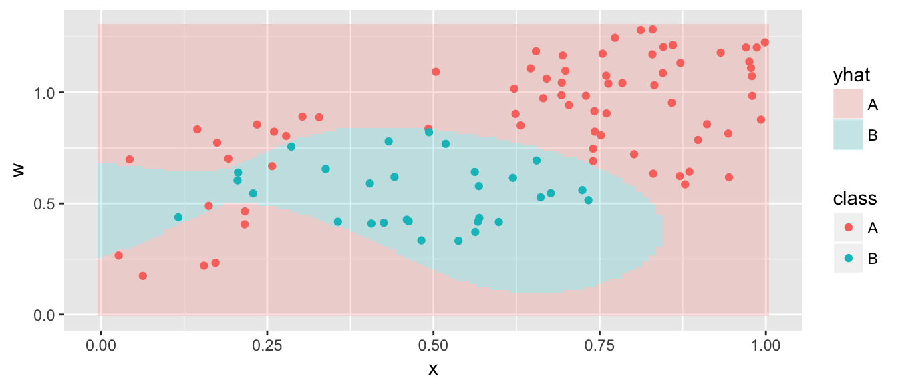
9.4 Predictions
Given a support vector machine, which uses the observed data to estimate \(f()\) with a calculated \(\hat{f}()\), we could produce a prediction for any set of covariates \(\mathbf{x}^*\) by simply predicting \[\hat{y}^* = \begin{cases} +1 \;\; \textrm{ if } \hat{f}(\mathbf{x}^*) > 0 \\ -1 \;\; \textrm{ if } \hat{f}(\mathbf{x}^*) < 0 \end{cases}\] But how could we produce an estimated probability for each class?
In the SVM literature, they address this question by assuming a bernoulli distribution of the observations where the probability of being in the \(+1\) group has an inverse-logistic relationship with \(\hat{f}\). In other words, we fit a logistic regression to \(\mathbf{y}\) using the univariate covariate predictor \(\hat{f}(\mathbf{x})\). We then obtain the \(\hat{p}\) values using the standard logistic regression equations.
Because the logistic regression step might be computationally burdemsome in large sample cases, the svm() function does not do this calculation by default and we must ask for it.
model <- svm( class ~ x + w, data=data,
kernel='radial', cost=1000,
probability=TRUE)
foo <- predict(model, newdata=data, probability=TRUE)
str(foo)## Factor w/ 2 levels "A","B": 1 2 1 1 1 1 2 1 1 1 ...
## - attr(*, "names")= chr [1:100] "1" "2" "3" "4" ...
## - attr(*, "probabilities")= num [1:100, 1:2] 0.9404 0.0136 0.9999 0.9996 0.9946 ...
## ..- attr(*, "dimnames")=List of 2
## .. ..$ : chr [1:100] "1" "2" "3" "4" ...
## .. ..$ : chr [1:2] "A" "B"This is the weirdest way to return the probabilities I’ve seen. The output of the predict.svm() function is a vector of predicted classes, and the probabilities are annoyingly returned via an object attribute.
foo <- predict(model, newdata=data, probability=TRUE)
data <- data %>%
mutate( yhat = foo,
phat = attr(foo, 'probabilities')[,1] ) # phat = Pr(y_i == A)Given these probabilites we can do our usual ROC analyses.
rocobj <- pROC::roc( class~phat, data=data )
pROC::auc(rocobj)## Area under the curve: 0.9967# pROC::ggroc(rocobj) # graph the ROC.9.5 SVM Tuning
As usual, we will use cross validation to tune our SVM. The e1071 package includes a tune() function that works similarly to the caret::tune() function.
ctrl <- tune.control(
sampling='cross', # Do cross-validation (the default)
cross=5, # Num folds (default = 10)
nrepeat=5) # Num repeats (default is 1)
train.grid <- list(cost=2^(-2:5), gamma=2^seq(-1, 1, by=.5))
tuned <- tune(svm, class~x+w, data=data, kernel='radial',
ranges = train.grid, tunecontrol = ctrl)
summary(tuned)##
## Parameter tuning of 'svm':
##
## - sampling method: 5-fold cross validation
##
## - best parameters:
## cost gamma
## 1 0.5
##
## - best performance: 0.08
##
## - Detailed performance results:
## cost gamma error dispersion
## 1 0.25 0.5000000 0.11 0.05477226
## 2 0.50 0.5000000 0.08 0.02738613
## 3 1.00 0.5000000 0.08 0.04472136
## 4 2.00 0.5000000 0.10 0.03535534
## 5 4.00 0.5000000 0.10 0.03535534
## 6 8.00 0.5000000 0.09 0.06519202
## 7 16.00 0.5000000 0.10 0.06123724
## 8 32.00 0.5000000 0.11 0.05477226
## 9 0.25 0.7071068 0.10 0.07071068
## 10 0.50 0.7071068 0.08 0.02738613
## 11 1.00 0.7071068 0.10 0.00000000
## 12 2.00 0.7071068 0.10 0.03535534
## 13 4.00 0.7071068 0.09 0.04183300
## 14 8.00 0.7071068 0.09 0.06519202
## 15 16.00 0.7071068 0.10 0.06123724
## 16 32.00 0.7071068 0.12 0.04472136
## 17 0.25 1.0000000 0.10 0.07071068
## 18 0.50 1.0000000 0.08 0.02738613
## 19 1.00 1.0000000 0.10 0.03535534
## 20 2.00 1.0000000 0.10 0.03535534
## 21 4.00 1.0000000 0.08 0.04472136
## 22 8.00 1.0000000 0.10 0.06123724
## 23 16.00 1.0000000 0.12 0.04472136
## 24 32.00 1.0000000 0.10 0.03535534
## 25 0.25 1.4142136 0.10 0.07071068
## 26 0.50 1.4142136 0.09 0.02236068
## 27 1.00 1.4142136 0.12 0.02738613
## 28 2.00 1.4142136 0.09 0.04183300
## 29 4.00 1.4142136 0.11 0.06519202
## 30 8.00 1.4142136 0.12 0.05700877
## 31 16.00 1.4142136 0.11 0.02236068
## 32 32.00 1.4142136 0.09 0.02236068
## 33 0.25 2.0000000 0.10 0.07071068
## 34 0.50 2.0000000 0.10 0.03535534
## 35 1.00 2.0000000 0.13 0.02738613
## 36 2.00 2.0000000 0.10 0.03535534
## 37 4.00 2.0000000 0.11 0.06519202
## 38 8.00 2.0000000 0.13 0.04472136
## 39 16.00 2.0000000 0.09 0.02236068
## 40 32.00 2.0000000 0.09 0.04183300By default in the classification problem, tune.svm() chooses the misclassification rate. The last column, labeled dispersion is the measure of spread of the estimate. I think it is the standard deviation of the fold misclassifications, but I haven’t been able to confirm that.
# plot(tuned, transform.x=log2, transform.y=log2) #2-d graph of the misclassification rate# save the best one...
best.svm <- tuned$best.model
summary(best.svm)##
## Call:
## best.tune(method = svm, train.x = class ~ x + w, data = data,
## ranges = train.grid, tunecontrol = ctrl, kernel = "radial")
##
##
## Parameters:
## SVM-Type: C-classification
## SVM-Kernel: radial
## cost: 1
## gamma: 0.5
##
## Number of Support Vectors: 33
##
## ( 17 16 )
##
##
## Number of Classes: 2
##
## Levels:
## A Bdata$yhat <- predict(best.svm, data=data)
table( data$class, data$yhat )##
## A B
## A 70 0
## B 5 25foo <- predict(model, newdata=data, probability=TRUE)
data <- data %>%
mutate( yhat = foo,
phat = attr(foo, 'probabilities')[,1] ) # phat = Pr(y_i == A)
rocobj <- pROC::roc( class~phat, data=data )
pROC::auc(rocobj)## Area under the curve: 0.99679.6 Response with multiple categories
There are two approaches we could take to address multiple categories. Suppose that the response has \(K\) different categories.
One-vs-One For all \(K \choose{2}\) pairs of categories, create a SVM that distguishes between each pair. Then for a new value, \(x^*\), for which we wish to predict an output class, simply evaluate each SVM at \(x^*\) and count the number of times each category is selected. The final predicted category is the one with the highest number of times chosen.
One-vs-Rest For each of the \(K\) categories, create a SVM that discriminates the \(k\)th category from everything else, where the \(k\)th category is denoted as the +1 outcome. Denote the result of this SVM \(\hat{f}_k()\). For a new value, \(x^*\), for which we wish to predict an output class, select the class \(k\) which has the largest value of \(\hat{f}_k( x^*)\).
The e1071::svm() function uses the One-vs-One approach.
ctrl <- tune.control(
sampling='cross', # Do cross-validation (the default)
cross=5, # Num folds (default = 10)
nrepeat=5) # Num repeats (default is 1)
train.grid <- list(cost=2^(-2:5), gamma=2^seq(-3, 3, by=.5))
tuned <- tune(svm, Species ~ Sepal.Length + Sepal.Width, data=iris, kernel='radial',
ranges = train.grid, tunecontrol = ctrl)
iris <- iris %>% mutate(Species.hat = predict(tuned$best.model))
table(Truth=iris$Species, Predicted=iris$Species.hat)## Predicted
## Truth setosa versicolor virginica
## setosa 49 1 0
## versicolor 0 35 15
## virginica 0 11 399.7 Regression using SVMs
Because SVMs generate an \(\hat{f}()\) function, we could use that as a predicted value in regression problems. In practice, the R code doesn’t change.
data('lidar', package='SemiPar')
ctrl <- tune.control(
sampling='cross', # Do cross-validation (the default)
cross=10, # Num folds (default = 10)
nrepeat=5) # Num repeats (default is 1)
train.grid <- list(cost=2^(-2:5), gamma=2^seq(-1, 1, by=.5))
tuned <- tune(svm, logratio ~ range, data=lidar, kernel='radial',
ranges = train.grid, tunecontrol = ctrl)
# summary(tuned)
best.svm <- tuned$best.model
summary(best.svm)##
## Call:
## best.tune(method = svm, train.x = logratio ~ range, data = lidar,
## ranges = train.grid, tunecontrol = ctrl, kernel = "radial")
##
##
## Parameters:
## SVM-Type: eps-regression
## SVM-Kernel: radial
## cost: 2
## gamma: 2
## epsilon: 0.1
##
##
## Number of Support Vectors: 130lidar$yhat <- predict(best.svm)
ggplot(lidar, aes(x=range)) +
geom_point(aes(y=logratio)) +
geom_line(aes(y=yhat), color='red')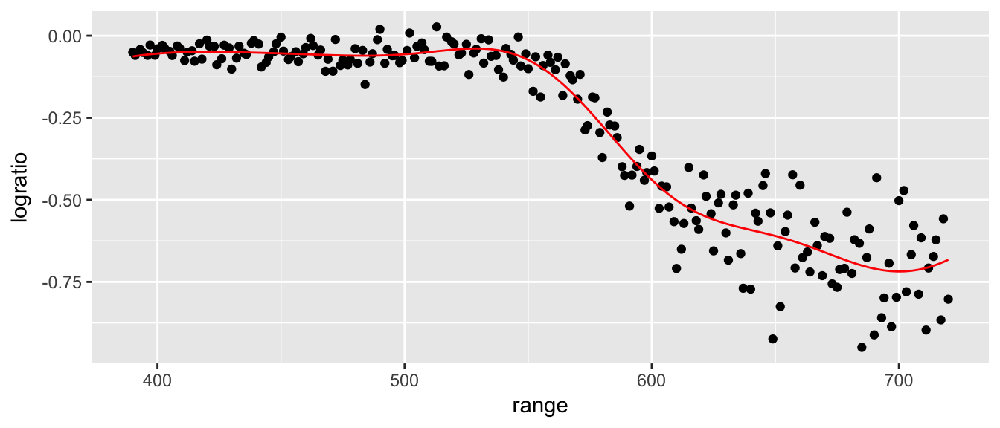
9.8 Exercises
- ISLR 9.3. In this problem we explore the maximal marginal classifier on a toy dataset.
We are given \(n=7\) data observations in \(p=2\) dimensions. For each observation there is an associated class label.
Sketch the observations.Obs. X1 X2 Y 1 3 4 Red 2 2 2 Red 3 4 4 Red 4 1 4 Red 5 2 1 Blue 6 4 3 Blue 7 4 1 Blue - Sketch the optimal separating hyperplane, and provide the equation for this hyperplane (of the form equation 9.1 in your book).
- Describe the classification rule for the maximal marginal classifier. It should be something along the lines of “Classify to Red if \(\beta_0 + \beta_1 X_1 + \beta_2 X_2 > 0\) and classify to Blue otherwise.”
- On your sketch, indicate the margin for the maximal margin hyperplane.
- Indicate the support vectors for the maximal margin classifer.
- Argue that a slight movement of the seventh observation would not affect the maximal marginal hyperplane.
- Sketch an hyperplane that is not the optimal separating hyperplane, and provide the equation for it.
Draw an additional point so that the two classes are no longer seperable by a hyperplane.
- ISLR problem 9.5. We have seen that we can fit an SVM with a non-linear kernel in order to perform classification using a non-linear decision boundary. We will now see that we can also obtain a non-linear decision boundary by performing logistic regression using non-linear transformations of the features.
Generate a data set with n = 500 and p = 2, such that the observations belong to two classes with a quadratic decision boundary between them. Then split your data into a test and training set. For instance, you can do this as follows:
set.seed(876397) data <- data.frame( x1 = runif(500)-0.5, x2 = runif(500)-0.5 ) %>% mutate( y = 1*( x1^2-x2^2 > 0) ) train <- data %>% sample_frac(.5) test <- setdiff(data, train)- Plot the observations, colored according to their class labels. Your plot should display \(X_1\) on the \(x\)-axis, and \(X_2\) on the \(y\)-axis.
Fit a logistic regression model to the data, using X1 and X2 as predictors.
model <- glm( y ~ x1 + x2, data=train, family='binomial') round( summary(model)$coef, digits=3 )## Estimate Std. Error z value Pr(>|z|) ## (Intercept) -0.145 0.127 -1.144 0.253 ## x1 0.368 0.444 0.828 0.408 ## x2 0.334 0.415 0.804 0.421- Apply this model to the training data in order to obtain a predicted class label for each training observation. Plot the observations, colored according to the predicted class labels. The decision boundary should be linear.
- Now fit a logistic regression model to the data using non-linear functions of \(X_1\) and \(X_2\) as predictors (e.g. \(X_1^2\), \(X_1X_2\), \(\log(X_2)\), and so forth).
- Apply this model to the training data in order to obtain a predicted class label for each training observation. Plot the observations, colored according to the predicted class labels. The decision boundary should be obviously non-linear. If it is not, then repeat (a)-(e) until you come up with an example in which the predicted class labels are obviously non-linear.
- Fit a support vector classifier to the data with X1 and X2 as predictors. Obtain a class prediction for each training observation. Plot the observations, colored according to the predicted class labels.
- Fit a SVM using a non-linear kernel to the data. Obtain a class prediction for each training observation. Plot the observations, colored according to the predicted class labels.
Comment on your results.
- ISLR problem 9.8. This problem involves the
OJdata set which is part of theISLRpackage.Create a training set containing a random sample of 800 observations, and a test set containing the remaining observations using the following code.
set.seed(9863) data('OJ', package='ISLR') train <- OJ %>% sample_n(800) test <- setdiff(OJ, train)- Fit a support vector classifier to the training data using
cost=0.01, withPurchaseas the response and the other variables as predictors. Use thesummary()function to produce summary statistics, and describe the results obtained. - What are the training and test error rates?
- Use the
tune() function to select an optimalcost. Consider values in the range 0.01 to 10. - Compute the training and test error rates using this new value for
cost. - Repeat parts (b) through (e) using a support vector machine with a radial kernel. Use the default value for gamma.
- Repeat parts (b) through (e) using a support vector machine with a polynomial kernel. Set
degree=2. Overall, which approach seems to give the best results on this data?